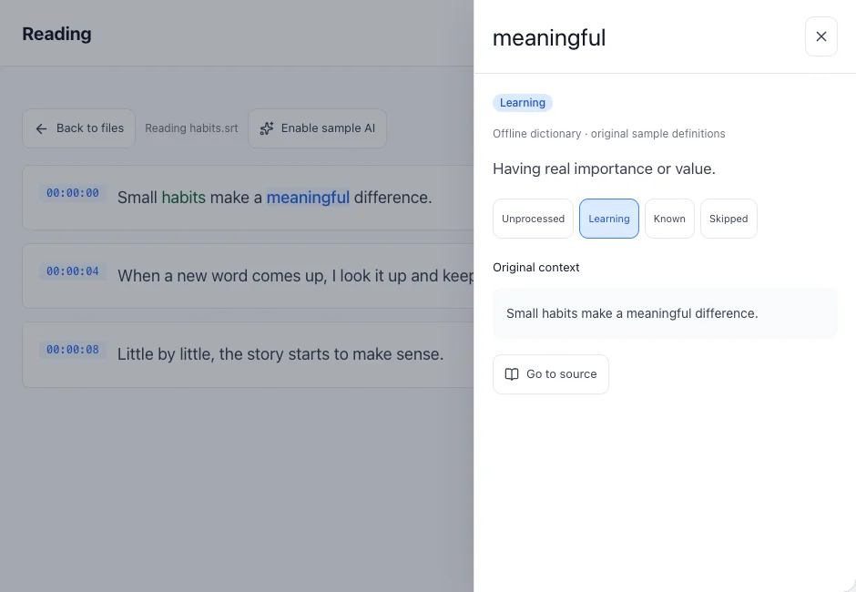
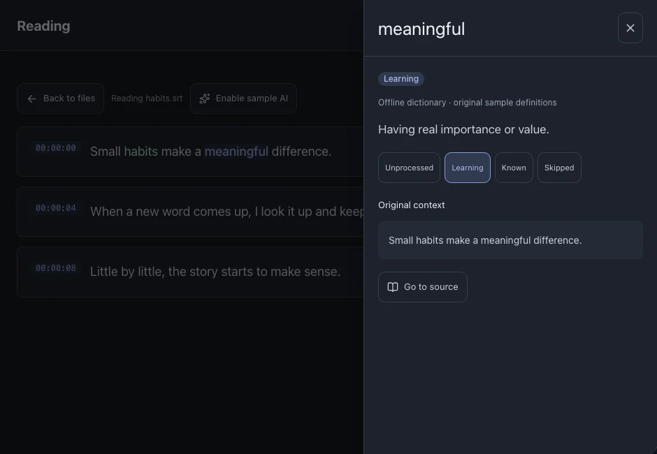

Reading and lookup
Read subtitles and look up words without leaving their context. Definitions open in a drawer that you can close to continue reading.
On this page
Look up a word
- Open a file and click a word in a subtitle line.
- Read the definition and original sentence. The drawer opens on the right on desktop and from the bottom on mobile.
- Close the drawer to continue. If no definition is available, check the learning language and dictionary settings.



See alsoDictionaries
Set a learning status
Use Learning for words you want to review, Known for words you already understand, and Skipped for entries you do not want to study. Unprocessed means you have not decided yet.
- Open the word and change its status.
- The same status is reflected in Vocabulary and Insights.
Understand context and phrases
AI is optional. Local Gemma needs a separate model download; a cloud provider needs your service configuration and sends the selected text to that service.
- Configure and enable AI in Settings.
- Start analysis from the file or reading page and wait for its result.
- Select a detected phrase to see its meaning and original context. Results depend on the language, model and content.